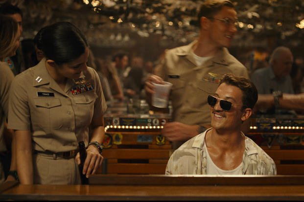
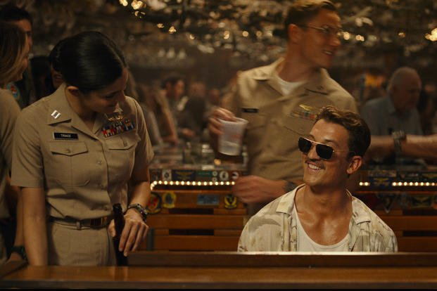

Thomas Cruise Mapother IV is an American actor. One of the world's highest-paid actors, he has received various accolades, including an Honorary Palme d'Or and three Golden Globe Awards, in addition to nominations for four Academy Awards

 
